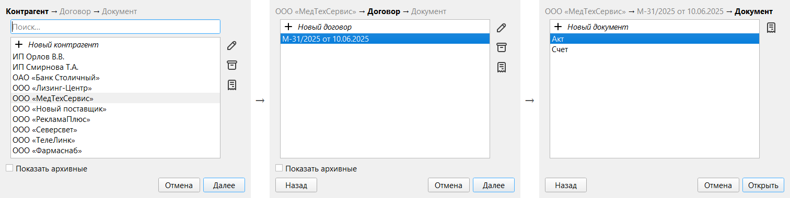
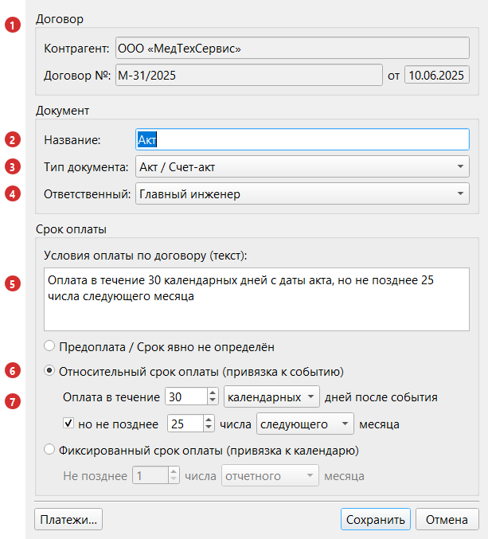
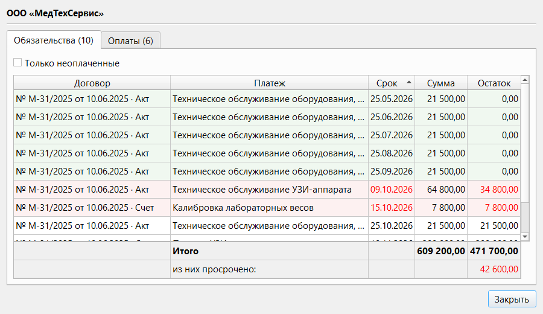
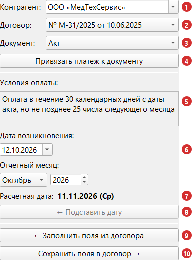

Раздел 6. Контрагенты, договоры, документы |
Платеж можно создать и без договора (раздел 3). Но если вы регулярно платите одной организации, заведите её: тогда программа рассчитает срок оплаты (правила — в разделе 7), а в новый платеж можно подставить готовые поля.
Цепочка: контрагент → договор → документ. Документ — это обычно не конкретный счёт, а вид бумаги («Счет», «Акт»): номера отдельных счетов и актов пишутся в основании платежа, а условия оплаты хранятся один раз — в документе.
Окно «Контрагенты и договоры» |
Окно — мастер из трёх шагов: «Контрагент → Договор → Документ».

Рис. 18. Три шага окна: контрагент, договор, документ.
| Шаг | Что в списке |
|---|---|
| Выбор контрагента | Контрагенты по алфавиту, первая строка — «Новый контрагент»; «Поиск…» по части названия |
| Выбор договора | Договоры контрагента («М-31/2025 от 10.06.2025»), первая строка — «Новый договор» |
| Выбор документа | Документы договора по алфавиту, первая строка — «Новый документ» |
«Новый контрагент» → «Далее» → название (текст из «Поиск…» подставляется) → «ОК». Контрагент с таким названием (регистр не различается) не создаётся: «Контрагент с таким именем уже есть в списке».
«Новый договор» → «Далее» → «Номер договора» и «Дата договора» → «ОК». Договор с таким номером и датой у контрагента уже есть: «Договор с таким номером и датой уже есть в списке».
«Новый документ» → «Создать» → окно документа (ниже) → «Сохранить».
|
⚠️ Внимание. Контрагент и договор создаются сразу после «ОК», «Отмена» окна их не удаляет. Удалить контрагента, договор или документ невозможно (убрать из списков можно архивом, см. ниже). |
Справа от списков контрагентов и договоров — кнопки; те же действия есть в контекстном меню по правой кнопке мыши.
Окно документа |

Рис. 19. Окно документа «Акт» по договору «М-31/2025».
| № | Поле | Что показывает или что вводить |
|---|---|---|
| 1 | Группа «Договор» | Контрагент, номер и дата договора, только для чтения |
| 2 | Название | Например, «Счет» или «Акт». Обязательное поле |
| 3 | Тип документа | «Счет / Счет-фактура / Платежное требование», «ТН / ТТН», «Акт / Счет-акт», «Договор / Спецификация / Протокол согласования» или «Другое». Обязательное поле |
| 4 | Ответственный | Должность, отвечающая за документ (список — «Настройки» → «Персонал»). В новый платеж по этому документу подставляется сотрудник, который сейчас занимает эту должность (раздел 3) |
| 5 | Условия оплаты по договору (текст) | Формулировка из договора, например «Оплата в течение 10 рабочих дней с даты выставления счёта». Показывается в окне платежа и при копировании с новым основанием; на расчёт не влияет |
| 6 | Тип срока оплаты | Выбор из трёх вариантов |
| 7 | Параметры срока | Поля выбранного типа срока |
Типы срока оплаты — в разделе 7. Без названия или типа документ не сохранится («Укажите название документа», «Выберите тип документа»).
История платежей |
Окно «Платежи: …» показывает все платежи и оплаты, привязанные к документам контрагента, договора или одного документа.

Рис. 20. История платежей контрагента. Просроченные платежи выделены красным, полностью оплаченные — зелёным.
Открывается кнопкой «Платежи…» в окне «Контрагенты и договоры» (на любом шаге), кнопкой «Платежи…» в окне существующего документа или командой «История платежей» контекстного меню таблицы платежей (раздел 2).
Привязка платежа к документу |
Привязка нужна для расчёта срока оплаты и для «Копировать платеж с новым основанием» (раздел 3). Выполняется в панели договора окна платежа (рис. 11 в разделе 3):

Рис. 21. Панель договора. 1 — контрагент, 2 — договор, 3 — документ, 4 — кнопка привязки, 5 — условия оплаты, 6 — дата возникновения и отчетный месяц, 7 — расчетная дата, 8 — «← Подставить срок оплаты», 9 — «← Заполнить поля из договора», 10 — «Сохранить поля в договор →».
В панели выберите «Контрагент» (1; названия, которого нет в списке, программа не принимает), «Договор» (2; подставляется автоматически — проверьте) и «Документ» (3). Нажмите «Привязать к документу» (4), затем «Создать» или «Применить»: привязка сохраняется вместе с платежом, «Отмена» её отменяет.
Условия оплаты (5), расчетная дата (7) и кнопки (8–10) появляются, когда выбран документ.
Отвязать платеж: ✕ в строке «Договор» окна платежа, затем «Применить». Документ остаётся в справочнике.
Привязанный платеж отмечен скрепкой (раздел 2) и ссылкой в панели сведений (см. «Переход к договору из платежа»).
Расчетная дата и кнопка «← Подставить срок оплаты» |
Для выбранного документа панель показывает расчетный срок оплаты (7), например «11.11.2026 (Ср)»; если расчёт невозможен («Предоплата / Срок явно не определён» или мало данных) — «—». Исходные данные (6):
Кнопка «← Подставить срок оплаты» (8) переносит расчетную дату в «Срок оплаты» (при относительном сроке — и дату возникновения из панели). Активна, только если платеж привязан к выбранному документу и расчетная дата есть. Сама дата не подставляется: срок можно задать вручную.
Поля из договора: сохранить и заполнить |
Поля повторяющихся платежей по документу можно один раз запомнить в нём.
«Сохранить поля в договор →» (10) запоминает для документа получателя, наименование, категорию и подкатегорию, НДС, вид, основание, ответственного и «Скрытый платеж» (не сумму, даты и заметки); прежние значения заменяются. В строке состояния на несколько секунд появляется «Данные договора успешно сохранены».
«← Заполнить поля из договора» (9) подставляет запомненные значения в окно платежа без вопросов (сумма, даты и заметки не меняются). Если ничего не сохраняли: «Для этого договора ранее не сохранялись значения». Обе кнопки работают с документом, выбранным в панели, даже если платеж к нему не привязан.
Порядок: заполнить первый платеж → «Сохранить поля в договор →»; в следующий раз выбрать тот же документ → «← Заполнить поля из договора» → ввести сумму, даты и номер документа.
|
💡 Совет. Если платежи по документу повторяются каждый месяц, быстрее пользоваться командой «Копировать платеж с новым основанием» (раздел 3): она не требует запоминать поля. |
Переход к договору из платежа |
Документ привязанного платежа открывается из главного окна: ссылкой «Привязан к договору» в панели сведений или командой «Перейти к договору» контекстного меню (рис. 8 в разделе 2). Для платежа без привязки команда недоступна.
Что нельзя сделать |
Если что-то пошло не так |
| Что вы видите | Что случилось | Что делать |
|---|---|---|
| «Контрагент с таким именем уже есть в списке» | Такой контрагент уже создан | Найдите его через поле «Поиск…» |
| «Договор с таким номером и датой уже есть в списке» | У этого контрагента уже есть такой договор | Выберите его в списке |
| «Укажите название документа» или «Выберите тип документа» | Не заполнено обязательное поле окна документа | Заполните поле |
| «Не удалось загрузить список контрагентов (см. подробнее лог)» | Данные не прочитались, окно открылось без списка | Закройте окно и откройте снова. Если не помогло, перезапустите программу |
| «Не удалось сохранить контрагента в базе данных (см. подробнее лог)» или «Не удалось сохранить договор в базе данных (см. подробнее лог)» | Запись не создалась или не переименовалась | Повторите попытку. Если сообщение повторяется, перезапустите программу |
| «Не удалось сохранить изменение в базе данных (см. подробнее лог)» | Не записалась отметка «В архив» или «Вернуть из архива» | Повторите; если не помогло, перезапустите программу |
| Контрагента или договора нет в списке, хотя он создавался | Он в архиве | Включите «Показать архивные» и верните из архива |
| «Не удалось загрузить историю платежей (см. подробнее лог)» | Данные для окна «Платежи» не прочитались | Закройте окно и откройте снова; если не помогло, перезапустите программу |
| «Этот платеж не загружен в таблицу: он оплачен раньше периода показа оплаченных платежей из настроек. Увеличьте период и повторите.» | Двойной щелчок в истории платежей по давно оплаченному платежу | Увеличьте срок в «Настройки» → «Таблица» → «Оплаченные платежи» (раздел 5) |
| «Не удалось загрузить данные из базы данных (см. подробнее лог)» при открытии документа | Не удалось прочитать документ, окно документа не открывается | Перезапустите программу. Если сообщение остаётся, обратитесь к ответственному за программу |
| В панели договора недоступны поля «Договор» или «Документ» | У выбранного контрагента нет договоров или у договора нет документов | Создайте недостающее в окне «Контрагенты и договоры» |
| В панели договора нет кнопок и условий оплаты | Документ не выбран | Выберите контрагента, договор и документ |
| Кнопка «← Подставить срок оплаты» неактивна | Платеж не привязан к документу, выбранному в панели, или у документа нет расчетной даты (например, «Предоплата / Срок явно не определён») | Привяжите платеж, и если расчетная дата «—», проверьте тип срока в документе |
| «Для этого договора ранее не сохранялись значения» | По документу ещё ни разу не нажимали «Сохранить поля в договор →» | Заполните поля вручную и сохраните их кнопкой «Сохранить поля в договор →» |
| «Ошибка при попытке сохранения данных (подробнее см. лог)» | Запомнить поля не удалось | Повторите попытку. Если сообщение повторяется, перезапустите программу |
| Вопрос «Получатель платежа «…» не совпадает с контрагентом «…». Привязать договор?» при нажатии «Привязать к документу» | Название получателя в платеже отличается от названия контрагента (регистр не важен) | «Да» привязывает платеж, название получателя не меняется. «Отмена» не привязывает |
| «Не удалось установить связь с базой данных» при сохранении документа | Условия оплаты документа не записались | Повторите попытку. Если сообщение повторяется, перезапустите программу и приложите журнал работы |